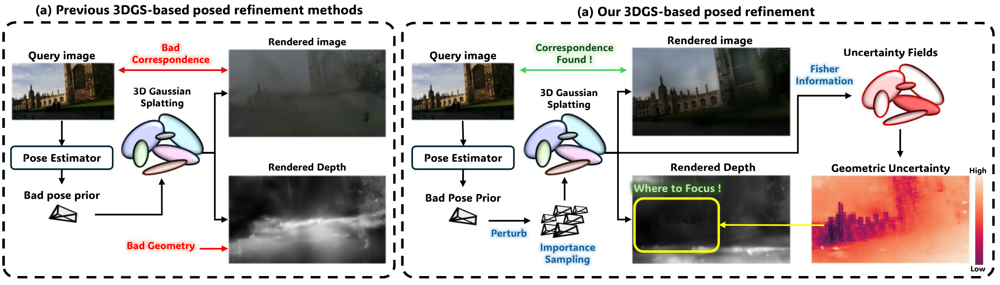
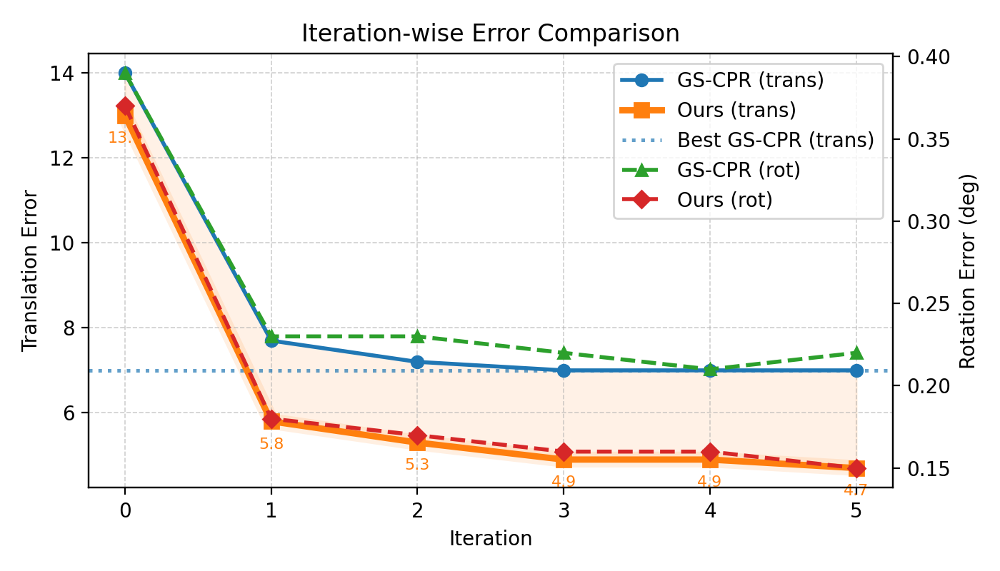

Abstract
3D Gaussian Splatting (3DGS) has recently emerged as a powerful scene representation and is increasingly used for visual localization and pose refinement. However, despite its high-quality differentiable rendering, the robustness of 3DGS-based pose refinement remains highly sensitive to both the initial camera pose and the reconstructed geometry. In this work, we take a closer look at these limitations and identify two major sources of uncertainty: (i) pose prior uncertainty, which often arises from regression or retrieval models that output a single deterministic estimate, and (ii) geometric uncertainty, caused by imperfections in the 3DGS reconstruction that propagate errors into PnP solvers. Such uncertainties can distort reprojection geometry and destabilize optimization, even when the rendered appearance still looks plausible. To address these uncertainties, we introduce a relocalization framework that combines Monte Carlo pose sampling with Fisher Information-based PnP optimization. Our method explicitly accounts for both pose and geometric uncertainty and requires no retraining or additional supervision. Across diverse indoor and outdoor benchmarks, our approach consistently improves localization accuracy and significantly increases stability under pose and depth noise.
Figures
Figure 1

UGS-Loc. Our proposed framework refines camera pose by incorporating pose prior uncertainty via Monte Carlo sampling and geometric uncertainty via uncertainty fields, achieving robust localization without retraining.
Overview

Comparison Graph

Left: UGS-Loc overview. The framework refines camera pose by combining Monte Carlo pose sampling with uncertainty-aware PnP optimization for robust localization. Right: Comparison between previous 3DGS-based pose refinement and UGS-Loc. Our method uses Monte Carlo pose sampling and Fisher-information-based uncertainty to focus refinement on reliable regions, improving robustness under poor pose priors.
Figure 1 (final)

Final version of the Figure 1 overview used in the paper.
Uncertainty-based PnP (v1)

Effect of uncertainty-based PnP. High-uncertainty correspondences are suppressed, yielding more reliable inliers and improved pose estimates.
Result Graph

Error–confidence and error–uncertainty trends. Higher matcher confidence and lower geometric uncertainty correlate with smaller localization errors.